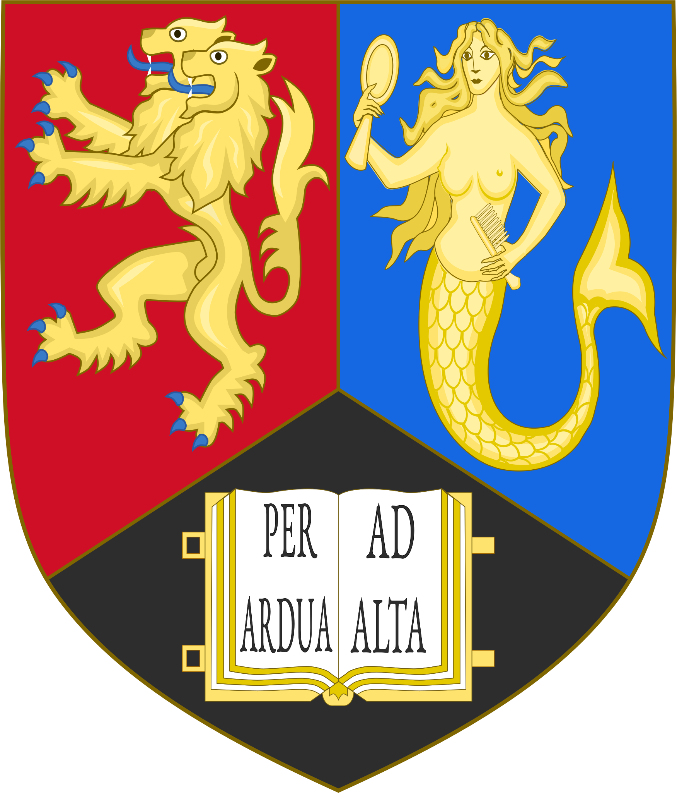
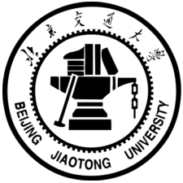

MEng, Mechanical & Industrial Engineering · University of Toronto, 2026
I recently completed my MEng in Mechanical & Industrial Engineering at the University of Toronto (October 2026).
I build wearable and on-body interfaces — sensing hardware worn in shoes, glasses,
and EEG headsets. I am interested in physiological sensing (EEG, gait, IMU), in human perception and
sensory substitution in extended reality, and in testing interactive devices with real users in real,
physical environments.
Since 2025 I have been working with Prof. Steve Mann
at the University of Toronto, where I led the DiaShoe smart-shoe project and contribute to EEG analysis, XR sensing,
and vision–IMU fusion for smart glasses. Every Sunday, I also organize and take part in our volunteer activities and outdoor
experiments at Peter Street Basin Park in Toronto. With Prof. Myrtede Alfred
and Hennick Bridgepoint Hospital (Sinai Health), I continue to study inpatient falls and design automatic braking for
wheelchairs and walkers.
Wearable and on-body interfaces — engineering sensing hardware worn on the body (shoes, glasses, EEG headsets).
Human perception and sensory substitution in extended reality.
Physiological sensing — EEG, gait, and IMU.
Interactive devices in the wild — tested on real users in real, physical environments.
Assistive & Medical DevicesHuman Factors in HealthcareMultimodal Sensor FusionRobot Learning
Education
MEng in Mechanical & Industrial Engineering
University of Toronto · Toronto, Canada
September 2025 – October 2026

BEng in Electronic and Electrical Engineering
University of Birmingham · Birmingham, UK
September 2023 – June 2024

BEng in Mechatronics Engineering
Beijing Jiaotong University · Beijing, China · English-medium program
September 2020 – June 2024
Publications
Journal manuscript under review
X. Chen, M. Yang, S. Mann, et al.
On-Device Hand Keypoint Forecasting on Smart Glasses via Vision–IMU Fusion.IEEE Sensors Letters. Under review (R2). First author
Conference presentations
X. Chen, et al.
Characterizing Brake-Related Inpatient Falls at a Rehabilitation Hospital: Incidence, Inter-Unit Variation, and Implications for Hardware Intervention Design.HFES International Symposium on Human Factors and Ergonomics in Health Care, Orlando, FL, March 2027. First author · Oral
Accepted conference papers
X. Chen, M. Yang, A. Vicol, Y. Xiao, R. Zeng, W. Li, S. Mann.
DiaShoe: A Smart Shoe for Diabetic Health-Monitoring with Gait and Nanoclimate Sensing.IEEE ICCE, 2026. First authorPDF
S. Mann, A. Vicol, N. Sabbour, G. L. Wodu, K. Monaragala, X. Chen, P. Aniolowski.
State-of-Float: From Balling to Future Space Travel.IEEE ICCE, 2026.
PDF
Y. Xiao, W. Li, R. Zeng, A. Vicol, X. Chen, M. Yang, S. Mann.
ColourSenseXR: Helping the Hearing-Impaired Perceive Sound Through Colour.IEEE ICCE, 2026.
PDF
A. Vicol, S. Mann, C. McGale, G. Bejar-Alvarez, M. Herrera Viyella, D. Zanjanpour, C. Park, X. Chen, X. Yang, B. Yang.
State-of-Flight: Wearable EEG and Motion Context During Flying or Floating.IEEE CBMS, 2026 (full paper).
PDF
A. Sher, A. Vicol, X. Chen, N. Kouyoumdjian, S. Mann.
Chirplet Analysis of Brain State During Snow and Cold Exposure.IEEE CBMS, 2026 (short paper).
PDF
A. Vicol, A. Sher, X. Chen, S. Mann.
Chirplet-Based Analysis of Gravitational-Wave Analysis: From Classical Chirplets to Family-Based Dictionary Representations.IEEE SPACE, 2026.
PDF
A. Vicol, X. Yang, B. Yang, X. Chen, M. Yang, K. Chaghouri, S. Mann.
MuseAI Focus: Evaluating AI-Driven Personalization in Attention Training using Wearable Consumer EEG.IEEE EMBC, 2026.
PDF
S. Mann, A. Vicol, X. Chen, J. Zhang, Y. Zhang, M. A. Herrera Viyella, K. Yuan, R. Adkisson.
Watermann (Soon May the Watermann Come): To Touch and Be Touched by Water.IEEE GEM, 2026.
PDF
R. Adkisson, A. Vicol, J. Zhang, D. Bros, Y. Zhang, X. Chen, S. Mann.
Boardmusic: Attention, Assemblage, and Improvisation on Water.IEEE GEM, 2026.
PDF
S. Mann, A. Vicol, X. Chen, J. Zhang, Y. Zhang, M. A. Herrera Viyella, M. Khan, R. Adkisson.
“Swiminalization” and (K)No(t)-Swimming: A Humorous Interactive Game for Liminalizing and Decriminalizing Swimming.IEEE GEM, 2026.
PDF
Selected Research
Sep 2025 – Present · University of Toronto & Hennick Bridgepoint Hospital, Sinai Health · Prof. Myrtede Alfred
Automatic Braking for Wheelchairs and Walkers.
Interviewed patients and clinical staff, observed patient mobility, and classified 755 inpatient fall reports to identify
user needs and human factors in mobility and transfers. Analyzed existing wheelchair and walker designs and developed
automatic braking and safety-feedback concepts. Evaluated brake engagement and release, mechanical reliability, and ease
of operation at the prototype and system levels.
Sep 2025 – Present · Vice President, MannLab, University of Toronto · Prof. Steve Mann
Wearable Sensing, Virtual and Extended Reality.
Research in wearable sensing, water-based human–computer interaction (Water-HCI), and XR. Led the DiaShoe smart-shoe
project and contributed to EEG signal analysis, XR sensing, and vision–IMU fusion for smart glasses. Every Sunday,
organize and take part in volunteer activities and outdoor experiments with
Prof. Steve Mann at Peter Street
Basin Park — coordinating fieldwork, deploying equipment, and collecting data to
validate wearable devices in the field. First author or co-author on ten papers accepted at IEEE ICCE, CBMS, EMBC, SPACE,
and GEM 2026.
Sep 2025 – Jan 2026 · University of Toronto research project
Vision-Language-Action Models for Robot Control.
Designed a retrieval-augmented control framework integrating VLA models for robot manipulation. Converted robot datasets
from HDF5 to LeRobot format, deployed pretrained transformer models in Docker, and fine-tuned multimodal policies for
specialized manipulation tasks.
Jan – Jun 2023 · Ministry of Education project, China
Omnidirectional Rescue Robot.
Developed an omnidirectional mobile robot using RTAB-based 3D perception to detect and avoid obstacles. Implemented
object recognition in TensorFlow and motion planning for a six-axis robotic arm. Designed a dual-controller architecture
(Jetson Nano and STM32) integrating LiDAR and IMU data for navigation.
Sep 2022 – Feb 2023 · BYD data collaboration
Electric Vehicle Thermal Management.
Led a three-member team designing an integrated thermal management system for an electric vehicle with multiple heat
sources. Built reduced-order thermal models from flow-field temperature data and developed a model predictive control
strategy to coordinate thermal regulation.
In the Field
Every Sunday, I organize and take part in volunteer activities and outdoor experiments with
Prof. Steve Mann at
Peter Street Basin Park in Toronto — testing wearable devices and water-based interfaces on real people, in real water.
In winter, we also run cold-exposure experiments in the snow on the University of Toronto campus. Videos of these sessions are on
YouTube (@hydraulist).
BAIC R&D Center.
Modified structural components in HyperMesh and CATIA as part of performance tuning for seven vehicle models. Supported
benchmarking and noise, vibration, and harshness testing at vehicle and subsystem levels.
Sep – Dec 2024 · Research Intern, Autonomous Drone & Vehicle Lab
Zhejiang University.
Designed and debugged embedded hardware and developed STM32 modules for signal acquisition and preprocessing; trained,
tested, and deployed models on embedded hardware. Modeled robotic grippers in SolidWorks and evaluated designs using
finite element analysis and motion simulation.